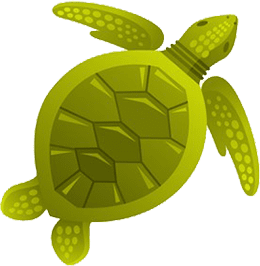
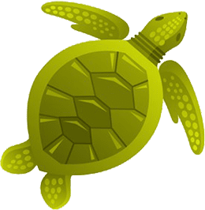

"Embrace the Thrill of"
Adventure


 Explore
Explore


 Explore
Explore


 



At Tapovan Yantrik, we draw inspiration from the sacred grounds where ancient sages
sought enlightenment. Like the pristine mountains that reach for the heavens, we
aspire to elevate technology to new heights while remaining grounded in timeless wisdom.
Our journey began with a profound understanding: true innovation must honor both
progress and preservation. Just as the eternal flow of rivers shapes the landscape,
we believe in creating solutions that naturally integrate with life's flow,
fostering harmony between tradition and advancement.
Through this unique synthesis of ancient knowledge and modern innovation, we craft
experiences that not only solve today's challenges but also preserve the wisdom
of yesterday for tomorrow's generations.
The Tapovan Trek, nestled in the Garhwal Himalayas, is a captivating journey that unfolds amidst breathtaking landscapes and spiritual significance.
Commencing from Gangotri, the trail meanders along the Bhagirathi River, passing through dense forests and revealing awe-inspiring views of the Bhagirathi peaks.
The trek reaches its pinnacle at Gaumukh, the sacred source of the Ganges River, offering a profound spiritual experience.
Continuing further, the route leads to Tapovan, a mesmerizing meadow framed by the imposing Shivling, Meru, and Bhagirathi peaks.
This alpine haven allows for exploration and reflection, with opportunities to climb nearby vantage points for panoramic views.
As trekkers descend, they traverse back through Chirbasa and Bhojbasa, concluding the expedition back at Gangotri.
The Tapovan Trek not only challenges adventurers physically but also presents an immersion into the pristine beauty and spiritual essence of the Garhwal Himalayas.